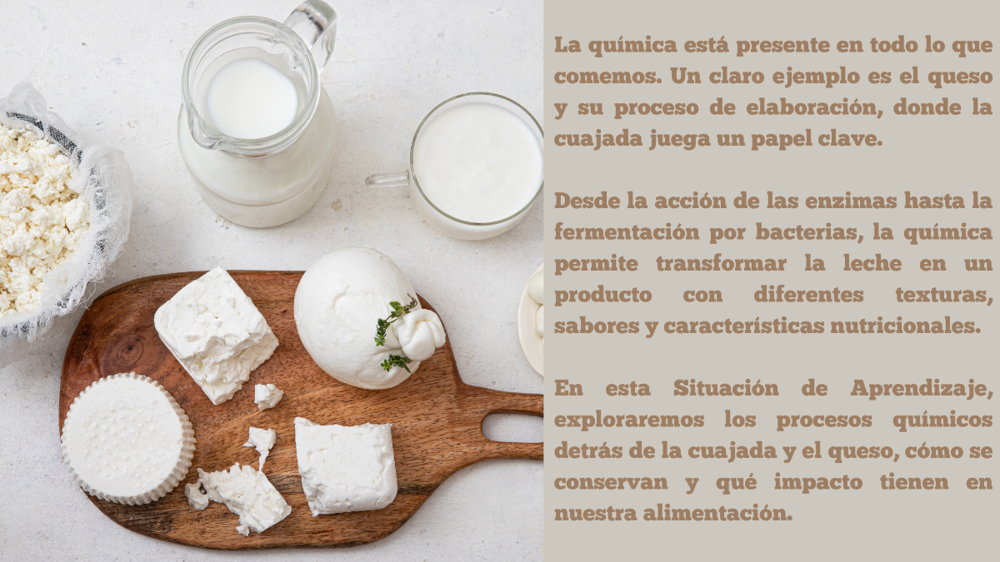
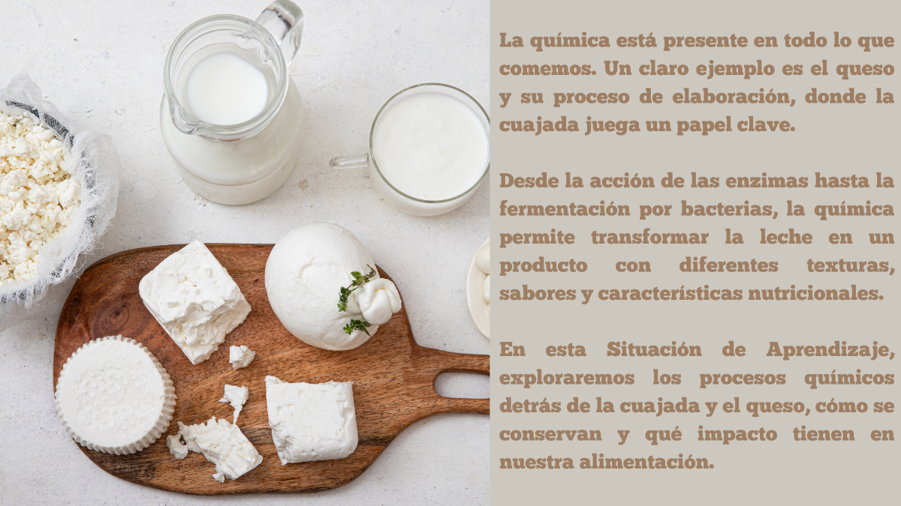

¿Cómo convierte la química la leche en cuajada y luego en queso?

¿Cómo convierte la química la leche en cuajada y luego en queso?
Descripción
Esta Situación de Aprendizaje se enmarca en el proyecto "Consultores Científicos al Servicio de Nuestro Pueblo", donde los estudiantes actúan como consultores de la empresa Masia Els Masets para analizar los procesos químicos en la producción de queso y reflejar este conocimiento en un rediseño del logo de empresa.
Conozcamos la Empresa: Masia Els Masets
Masía Els Masets es una empresa dedicada a la producción artesanal de productos lácteos de alta calidad, ubicada en La Torre d’En Besora, en la comarca del Maestrat, en el interior de Castellón. Desde su fundación en 2009, ha combinado la tradición con la innovación para ofrecer productos elaborados con leche fresca de oveja, cuidando cada etapa del proceso para garantizar un sabor auténtico y natural.
Reto
La empresa Masia Els Masets quiere renovar su imagen y destacar la importancia de la ciencia en la producción del queso. Actualmente, su logo transmite una imagen tradicional y artesanal, pero desean que refleje la ciencia que intervienen en su elaboración.
Como consultores científicos, los estudiantes investigarán los procesos físicos y químicos de la producción de la cuajada y el queso y diseñarán un nuevo logo para la empresa que represente la fusión entre tradición y ciencia en su producción.
Producto Final
Infografía en la que cada equipo presenta una propuesta de rediseño del logotipo de “Masia Els Masets”, incorporando elementos visuales que representen los procesos físicos y químicos implicados en la elaboración del queso (coagulación, fermentación, conservación de la masa, transferencia de energía, etc.). La infografía incluirá también texto explicativo que justifique la selección de los elementos gráficos utilizados desde una perspectiva científica. El trabajo finalizará con una presentación oral ante la clase y un representante de la empresa, donde los estudiantes defenderán su diseño integrando conocimientos científicos, comunicativos y creativos.
Esta Situación de Aprendizaje se desarrollará en 8 sesiones de 55 minutos cada una.
En esta Situación de Aprendizaje (SA) se aplican metodologías activas para fomentar el pensamiento crítico, la indagación y el trabajo colaborativo. A través de un enfoque interdisciplinar, los estudiantes se convertirán en consultores científicos encargados de diseñar la identidad visual de una empresa real relacionada con la producción de queso. Para ello, deberán comprender los procesos químicos involucrados en la fabricación del queso y la cuajada, experimentarlos en el laboratorio y representarlos en un logo basado en ciencia.
Para lograrlo, se integran diversas estrategias metodológicas:
Aprendizaje Basado en Problemas (ABPr)
Se aplica mediante la resolución de un problema abierto sobre la fermentación láctica, en el que el alumnado debe calcular la cantidad de ácido láctico producido. Esta tarea implica interpretar la ecuación química, aplicar la ley de conservación de la masa y trabajar en equipo. Se fomenta el pensamiento crítico, la búsqueda de información y la transferencia de conocimientos a un contexto real.
Aprendizaje Basado en la Indagación (ABI)
Aplican el método científico para investigar la fermentación láctica, identificar variables, formular hipótesis y analizar resultados experimentales.
Aprendizaje Cooperativo
Trabajo en equipo con reparto de roles, toma de decisiones conjunta y evaluación por pares, fomentando la corresponsabilidad y la comunicación.
Aprendizaje Basado en el Pensamiento (Visible Thinking)
La rutina de pensamiento Veo, pienso, me pregunto se utiliza al inicio para activar conocimientos previos y fomentar la reflexión crítica. A través de esta estrategia, el alumnado observa una situación real y genera preguntas que guían su proceso de indagación científica.
Obra publicada con Licencia Creative Commons Reconocimiento Compartir igual 4.0
{kind=link}
{kind=link}
{kind=link}
{kind=link}